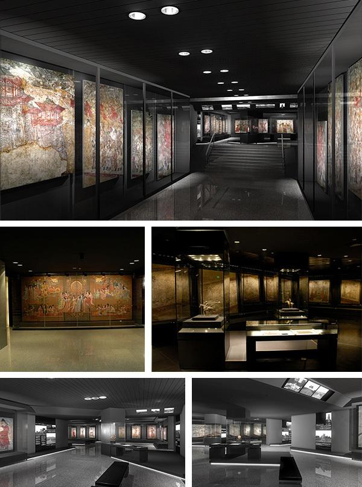
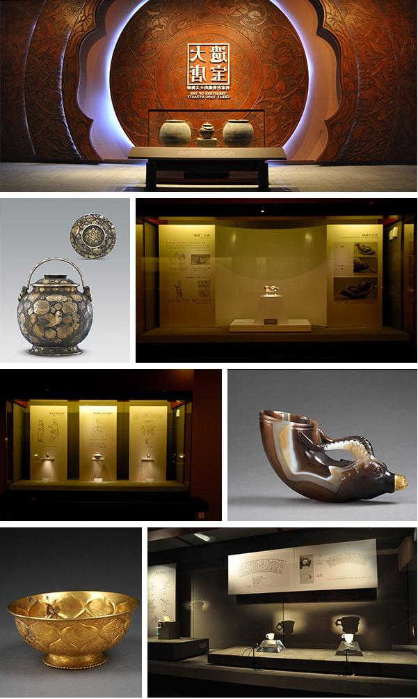

陕西历史博物馆是中国第一座大型现代化国家一级博物馆，首批中国AAAA级旅游景点，位于陕西省西安市雁塔区。该博物馆是中央地方共建国家级重点博物馆，被评选入“中国20世纪建筑遗产”。馆藏文物居中国博物馆前列，上起远古人类初始阶段使用的简单石器，下至1840年前社会生活中的各类器物。
陕西历史博物馆是一座综合性历史类博物馆。开馆以来，举办了各种形式的陈列展览，从多角度、多侧面向广大观众揭示历史文物的丰富文化内涵，展现华夏民族博大精深的文明成就。馆区占地65000平方米，建筑面积55，600平方米。文物库区面积8000平方米，展厅面积11600多平方米，展线总长2300米。整个陈列分为序言厅、基本陈列、专题展览、临时展览和已开辟为国际画廊的中央大厅等几个部分。
陕西历史博物馆基本陈列《陕西古代文明》，于2008年3月正式开放，以历史进程为线索，选取各时代的典型文物进行组合陈列，来揭示陕西地区古代社会文明发展状况。该陈列展厅面积4600平方米，共三个展室，分为七个部分（史前、周、秦、汉、魏晋南北朝、隋唐、宋元明清），精选的2000余件珍贵文物包括：反映古代先民生活情景和艺术追求的丰富多姿的彩陶器皿，反映周人兴起与鼎盛的青铜器，反映秦扫六合统一天下气势的青铜剑、经机、兵马等，以及显示秦汉奋发崛起精神的钢建筑构件、大型瓦当，还有反映封建盛世繁荣景象的精美的唐代金银器和唐三彩等，并配以遗址模型、图表、照片等辅助展品。系统地展现了自115万年前至1840年陕西地区的古代历史。由于中国古代社会周、秦、汉、隋、唐几个盛期都是在陕西地区建都，所以该陈列以这几个时期为重点，既突出反映了陕西地区古代灿烂的文化，也反映了这几个时期中国社会经济文化发展的最高水平。
作为综合性历史博物馆，陕西历史博物馆的陈列主要分为基本陈列、专题陈列、临时陈列三部分。基本陈列为陕西古代史陈列。它以时代为序，将陕西古代史分为史前、周、秦、汉、魏晋南北朝、隋唐、宋元明清7个部分，用约2000件文物形象、系统地展现了陕西自旧石器时代早期的蓝田人至鸦片战争一百多万年的发展过程。专题陈列是学术性、专业性较强并围绕着某一主题而举办的不定期展览。临时陈列是基本陈列和专题陈列的补充，具有周期短、内容丰富、常看常新的特点，同时它又是一个文化交流场所、博物馆面对社会的文化窗口。